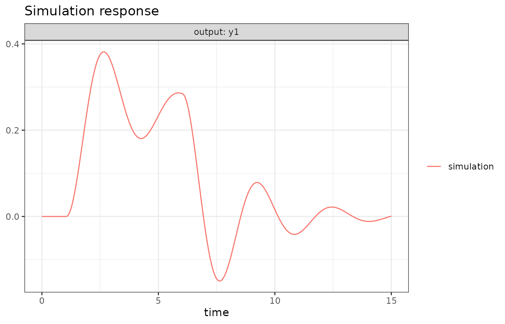
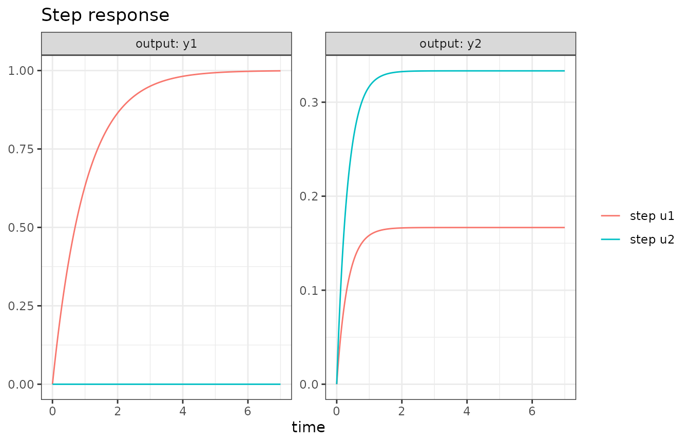
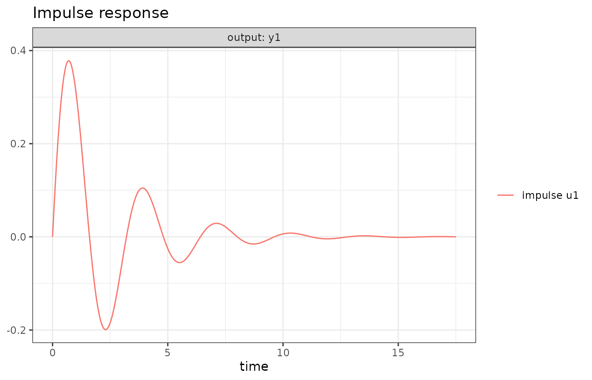
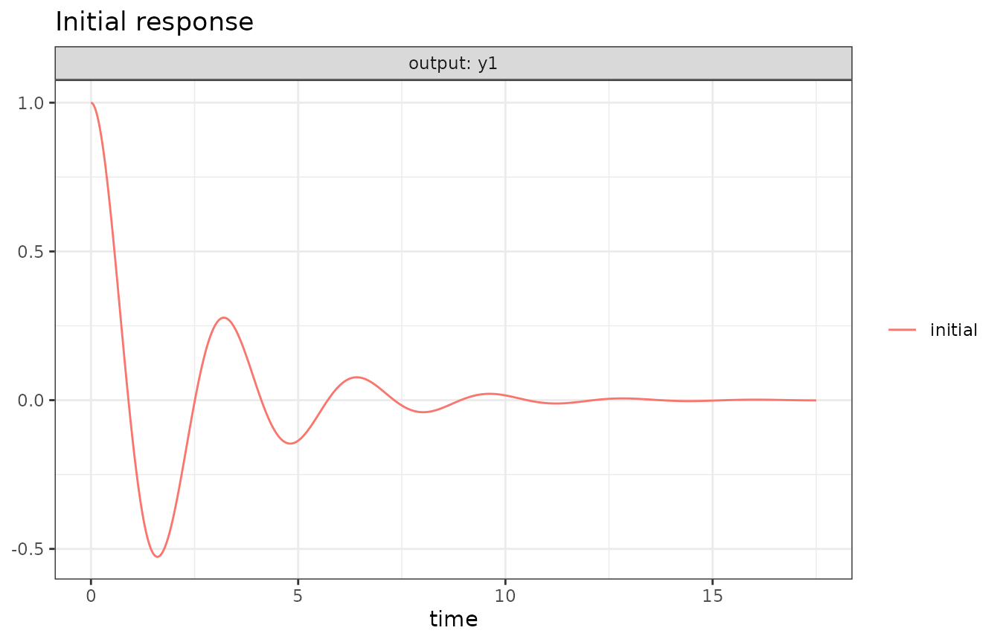

Simulation with arbitrary inputs
ctrl_simulate() integrates a continuous model exactly
for inputs that are piecewise constant (zero-order hold, the default) or
piecewise linear (first-order hold) between the time points, using
matrix exponentials of augmented matrices. No numerical ODE solver is
involved, so the result is exact up to rounding:
sys <- ctrl_ss(matrix(c(0, 1, -4, -0.8), 2, byrow = TRUE), c(0, 1), c(1, 0))
t <- seq(0, 15, by = 0.05)
u <- as.numeric(t > 1) - as.numeric(t > 6)
res <- ctrl_simulate(sys, input = u, times = t)
plot(res)
head(as.data.frame(res))
#> time case kind signal value
#> 1 0.00 simulation output y1 0
#> 2 0.05 simulation output y1 0
#> 3 0.10 simulation output y1 0
#> 4 0.15 simulation output y1 0
#> 5 0.20 simulation output y1 0
#> 6 0.25 simulation output y1 0For a discrete model the simulation is the difference equation itself
and times must be multiples of the sample interval.
Step, impulse and initial-condition responses
When no time grid is given, one is chosen from the slowest and fastest poles. Each input is applied in turn:

plot(ctrl_impulse(sys))
plot(ctrl_initial(sys, x0 = c(1, 0)))
Step characteristics
G <- ctrl_tf(9, c(1, 1.2, 9))
info <- ctrl_step_info(G)
info
#> output case rise_time settling_time overshoot undershoot peak
#> 1 y1 step u1 0.4012302 6.538462 52.65921 0 1.526592
#> peak_time final_value settled final_value_known
#> 1 1.072261 1 TRUE TRUEThe definitions are explicit: rise time from 10 to 90 percent of the
final change, settling time as the last exit from a 2 percent band,
overshoot and undershoot as percentages of the final change. For a
stable model the final value is taken from the DC gain; otherwise the
last simulated sample is used and settled says whether the
response had stopped changing. The classical approximation for the
overshoot of a second order system, 100
e^{-\pi \zeta / \sqrt{1 - \zeta^2}}, agrees:
Integral performance criteria
ctrl_performance() computes IAE, ISE, ITAE, RMSE,
control effort and the largest bound violation for any recorded
experiment:
st <- ctrl_step(G)
ctrl_performance(st$time, st$y[, 1, 1], r = 1)
#> IAE ISE ITAE RMSE
#> 1 1.11315 0.4833329 1.781247 0.2046612